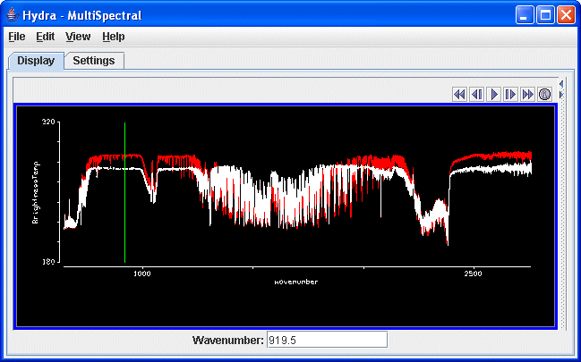
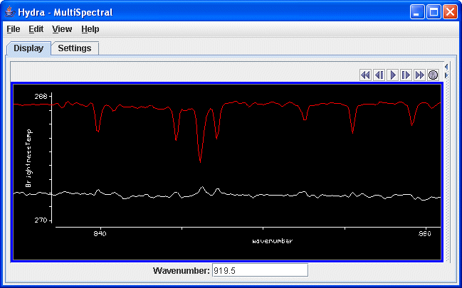

McIDAS-V User's Guide > Getting
Started
McIDAS-V User's Guide > Getting
Started

HYDRA
This section describes how to create multispectral displays using HYDRA. The
set of steps include:
Creating the Multispectral Display
In the Data Explorer window select HYDRA from
the Data Sources tab to
view the chooser.
For more information about the HYDRA chooser, see Choosing
Multispectral Data.
The HYDRA chooser is fairly similar to the File
Chooser. Dowload the IASI image from January 15, 2007 located at: ftp://ftp.ssec.wisc.edu/pub/mug/mcidas-v/training/IASI_xxx_1C_M02_20070115_1140.nc.
Navigate to the directory the file is in and add it as a source. In the Field
Selector,
select the "Multispectral
Display" and click Create Display.
Changing the Displayed Area
There are four aspects to the multispectral display. The first is the image in
the main display window. The image will be displayed on a global map located
over Northern Africa and the Mediterranean Sea. Use the Shift-Left
Click option to draw a box around the image to zoom in it. Under the Projections menu,
select Use Displayed Area. This will move the data probes to
the center of the image. The second aspect is the Spectra. The Spectra is
displayed in the Layer Controls tab under "Hydra - MultiSpectral."
The spectra displayed upon default is the 919.50 cm-1 spectral region
(10.8 µm).
The final two aspects are the two spectrum probes. In the main display there
are two colored square boxes that represent the main probe (red) and the reference
probe (orange). These two probes are listed under "MultiSpectral" under "No
Display" in the Layer Controls. Click and drag either
box to view the spectra measured in various pixels around the image or use one
as a reference spectrum.
The Multispectral Display
Change the wavenumber being displayed to 852.25 cm-1 by entering
in the value into the Wavenumber: box in the Multispectral
Display and hitting enter. Move the red and orange spectra probes to the approximate
locations in the image below to locate an inversion at the location of the
red box over Albania.
Once the two probes are in the approximate locations, the MultiSpectral window should look similar to the image below.

Zoom in over the 852.25 cm-1 region using the Ctrl+Left
Click+Drag combination to create a box of the region
to zoom in on. If you miss the region, or want to return to the full spectra,
use Shift+Left Click. The inversion should become clear
as you zoom in, as shown in the image below.

McIDAS-V User's Guide > Getting Started